Persian
carpet flatworm
Pseudobiceros bedfordi
Family
Pseudocerotidae
updated
Feb 2020
Where
seen? This richly patterned flatworm is more often encountered
by divers. It is sometimes seen in the intertidal near living reefs on
our Southern shores. This is among the few flatworms named from Singapore, in 1903 by Laidlaw
Features: 8-10cm long. Usually with deep ruffles. Body with
a distinctive rich pattern of stripes in black, brown and rose pink
with tiny white dots. The stripes curve from the centre of the body
to the sides. Black wide margin with white dots. The underside
is uniformly pale pink with a wide black margin. It has a pair of
pseudotentacles made up of simple folded edges of
the body.
What does it eat? It eats ascidians. |
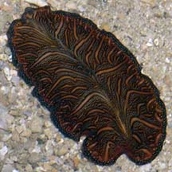
Cyrene Reef, Mar 07 |
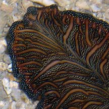
Pseudotentacles
made up of folded body edges. |
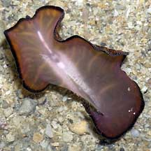
Underside pink with black margin.
Pulau Hantu, Jan 06 |
*Species
are difficult to positively identify without close examination.
On this website, they are grouped by external features for convenience
of display.
| Persian
carpet flatworms on Singapore shores |
| Other sightings on Singapore shores |
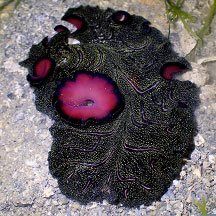
Pulau Sekudu, Aug 23
Photo
shared by Jianlin Liu on facebook. |
|
|
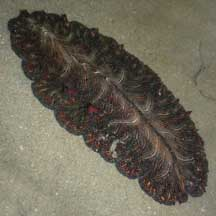
Tanah Merah, Jun 09
Photo
shared by Ivan Kwan on his
blog. |
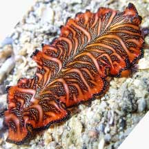
Sentosa Tg Rimau, May 22
Photo
shared by Richard Kuah on facebook. |
|
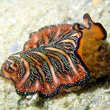
Lazarus Island, Nov 20
Photo
shared by Jianlin Liu on facebook. |
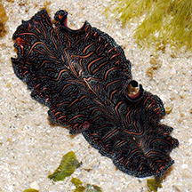
Seringat-Kias, Nov 14
Photo
shared by Loh Kok Sheng on facebook. |
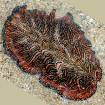
Pulau Tekukkor, Jan 22
Photo
shared by Vincent Choo on facebook. |
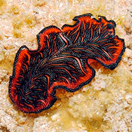
Sisters Island, May 14
Photo
shared by Loh Kok Sheng on his blog. |
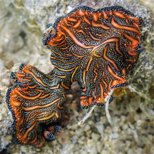
Pulau Jong, Jan 23
Photo
shared by Vincent Choo on facebook. |
|
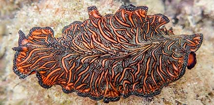
St John's Island, Oct 20
Photo
shared by Vincent Choo on facebook. |
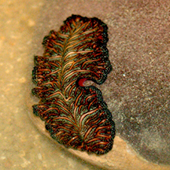
St John's Island, May 07
Photo
shared by Dickson on his blog. |
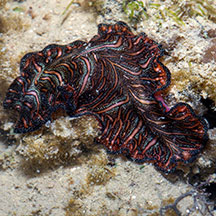
Pulau Hantu, May 19*
Photo
shared by Marcus Ng on facebook. |
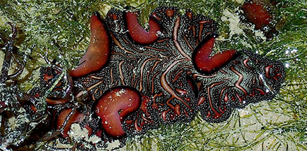
Pulau Hantu, May 19
Photo
shared by Toh Chay Hoon on facebook. |
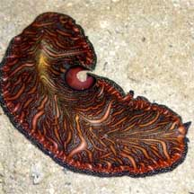
Pulau Semakau, Oct 08
Photo
shared by Loh Kok Sheng on his
blog. |
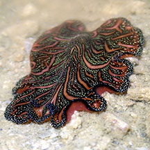
Pulau Semakau South, Jan 20
Photo
shared by Jianlin Liu on facebook. |
|
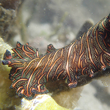
Pulau Semakau North, Nov 14
Photo
shared by Jianlin Liu on facebook. |
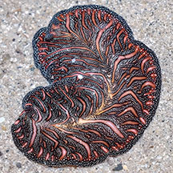
Pulau Semakau North, Oct 23
Photo
shared by James Koh on facebook. |
|
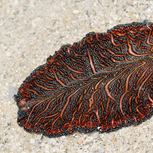
Terumbu Semakau, Nov 12
Photo
shared by Heng Pei Yan on her blog. |
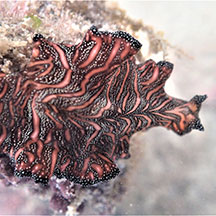
Terumbu Bemban, Jul 18
Photo
shared by Lisa Lim on facebook. |
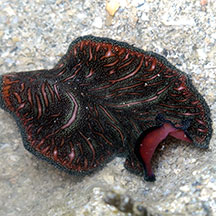
Beting Bemban Besar, Nov 18
Photo
shared by Jianlin Liu on facebook. |
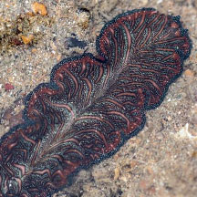
Terumbu Pempang Tengah, Nov 18
Photo
shared by Juria Toramae on facebook. |
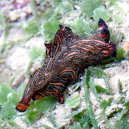
Terumbu Pempang Laut, May 19
Photo
shared by Jianlin Liu on facebook. |
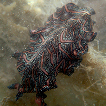
Terumbu Pempang Kecil, Jan 15
Photo
shared by Jianlin Liu on facebook. |
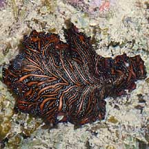
Pulau Senang, Jun 10
Photo
shared by Loh Kok Sheng on his
flickr. |
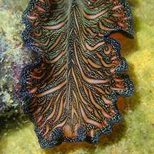
Pulau Biola, Jan 22
Photo
shared by Jianlin Liu on facebook. |
|
|
Acknowledgement
Grateful thanks to Rene Ong for sharing details and identifying the flatworms on this page.
Links
References
- Rene S.L. Ong and Samantha J.W. Tong. 29 October 2018. A preliminary checklist and photographic catalogue of polyclad flatworms recorded from Singapore. Nature in Singapore 2018 11: 77–125.
- D. M. Bolaños, B. Q. Gan & R. S. L. Ong. 29 Jun 2016. First records of pseudocerotid flatworms (Platyhelminthes: Polycladida: Cotylea) from Singapore: A taxonomic report with remarks on colour variation.(pdf) The Raffles Bulletin of Zoology Supplement No. 34: 130-169 Pp. 130-169.
- Newman, L.J.
& Cannon, L.R.G. Nine new species of Pseudobiceros (Platyhelminthes:
Polycladida) from Indo-Pacific. Pp. 341-368. in the Raffles
Bulletin of Zoology vol 45.
- Gosliner,
Terrence M., David W. Behrens and Gary C. Williams. 1996. Coral
Reef Animals of the Indo-Pacific: Animal life from Africa to Hawaii exclusive of the vertebrates
 Sea Challengers. 314pp.
Sea Challengers. 314pp.
- Newman, Leslie
and Lester Cannon. 2003. Marine
Flatworms: The World of Polyclads.
CSIRO Publishing. 97pp.
- Humann, Paul
and Ned Deloach. 2010. Reef
Creature Identification: Tropical Pacific New World Publications.
497pp.
- Kuiter, Rudie
H and Helmut Debelius. 2009. World
Atlas of Marine Fauna
 . IKAN-Unterwasserachiv. 723pp.
. IKAN-Unterwasserachiv. 723pp.
|
|
|